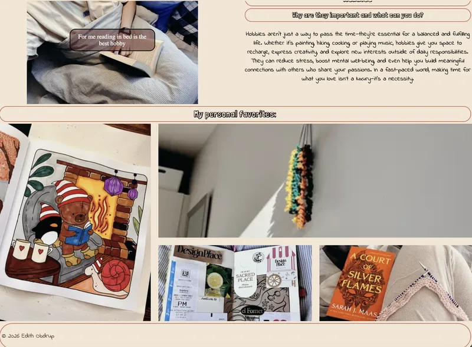
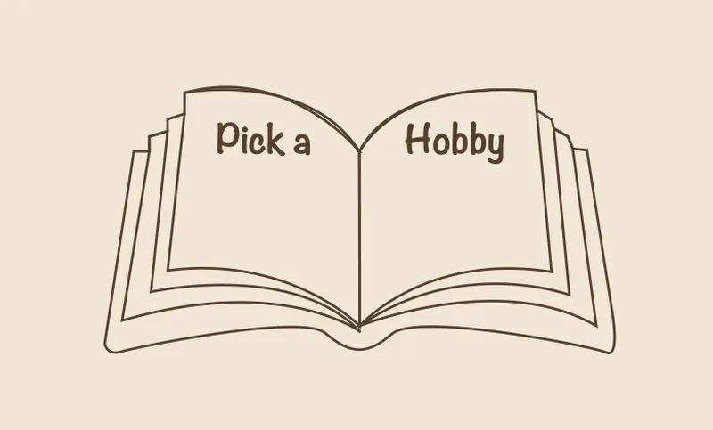

tema 5 - grundlæggende indhold
I tema 5 havde vi fokus på indholdsproduktion og digitalt design. Desværre var jeg ikke til stede de første dage af temaet, hvilket betød, at jeg gik glip af noget af den indledende undervisning. Alligevel fik jeg et godt indblik i emnet gennem de efterfølgende opgaver og øvelser. I løbet af temaet arbejdede vi blandt andet med Adobe Photoshop, hvor vi gennem et sandkassesite fik mulighed for at eksperimentere med forskellige design- og indholdsmetoder. Vi afprøvede brugen af AI til at generere indhold og lærte om forskellige billedformater samt betydningen af at tilpasse billeder til forskellige skærmstørrelser og layouttyper på et website.

Sandkassesite og Hero
Sandkassesitet fungerede som en legeplads, hvor formålet var at teste idéer og afprøve nye værktøjer uden faste rammer. Her eksperimenterede jeg blandt andet med brugen af AI til at udvikle logoet til sitet. Derudover arbejdede vi med design af en hero-sektion, som har til formål at fange brugerens opmærksomhed og hurtigt kommunikere sidens budskab og indhold. Til dette projekt anvendte jeg Adobe Illustrator til selv at tegne en illustration, som blev en central del af designet. Selvom jeg generelt er tilfreds med resultatet, kan jeg i dag se, at jeg med fordel kunne have brugt mere tid på at gøre illustrationen mere dynamisk og levende. Det ville sandsynligvis have gjort hero-sektionen mere iøjnefaldende og styrket dens evne til at tiltrække brugerens opmærksomhed. Temaet havde også stort fokus på samarbejde omkring kodeudvikling og brugen af fælles værktøjer til versionsstyring. Dette var et vigtigt læringsområde, som gav mig en bedre forståelse for, hvordan man arbejder effektivt sammen om et digitalt projekt. Min oplevelse med dette samarbejde kan du læse mere om i afsnittet om gruppeprojektet.

